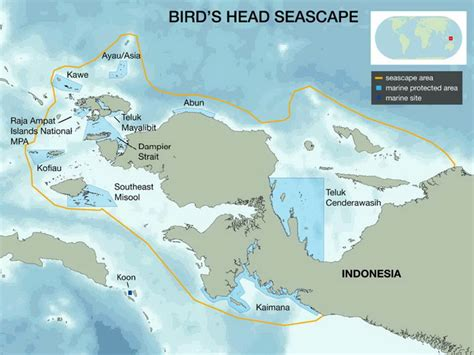
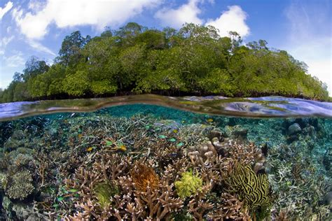
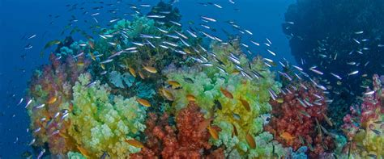

What is the purpose of a Marine Protected Area?
Marine Protected Areas (or MPAs) endeavor to protect marine life and crucial marine habitats for both their intrinsic and cultural values. While MPAs are discrete geographic regions characterized by regulations limiting or entirely preventing human interaction, they support a wide array of organisms that may be transient between multiple areas (protected or non).
Desires to protect or preserve local fisheries often play a major role in motivating MPA development. As a result, fishery species biomass is of special interest to policy makers, who allocate funds and advise the management of these areas.
As of 2025, MPA networks are utilized worldwide, but there is no unified methodology for determining how MPAs affect key species biomass. This is due in part to the difficulty in establishing a counterfactual that MPA sites can be compared to, in order to ascertain the trajectory of key species biomass in the absence of MPA establishment in these areas.
MPA boundaries are often selected to encompass specific biota and biodiversity, and thus are not randomly selected. Since marine monitoring and research is time consuming and costly, it is highly unlikley that there will be legacy monitoring of a region before it becomes an MPA.
However, there have been some promising frameworks proposed that utilized sites with legacy monitoring to test the validity of their proposed designs.

How can we measure their effectiveness?
In the paper “Integrating impact evaluation in the design and implementation of monitoring marine protected areas” by Ahmadiyya et al. 2015, the researchers proposed that control sites should be randomly selected and monitored at the time of MPA establishment, to act as counterfactuals for future analysis of MPA effectiveness. They then proposed using a Difference-in-Difference (DiD) method for analyzing key fisheries species biomass, as well as functional species biomass (herbivorous fish that maintain the reef) between sites.
To demonstrate the application of this framework, they decided to select a pre-existing MPA site with a plethora of monitoring data, Bird’s Head Seascape in Indonesia, and “reverse engineer” counterfactual sites in order to run a DiD and Hierarchical Mixed Effect Models.
This was accomplished via the selection of 10 primary covariates, selected by local researchers and reef specialists, comprehensive literature reviews, and determining what aligned with available data. The researchers affirmed that their covariates ” The final covariates were determined to encompass “structural, biophysical, and social features of coral-reef sites that influence ecosystem structure”.
Difference-in-Difference (DiD)
Hierarchical Mixed Effect Model

Primary Covariates
